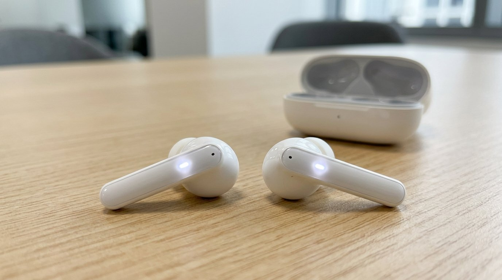
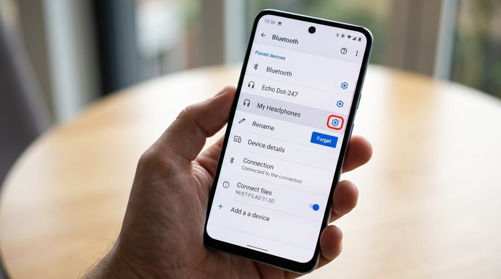
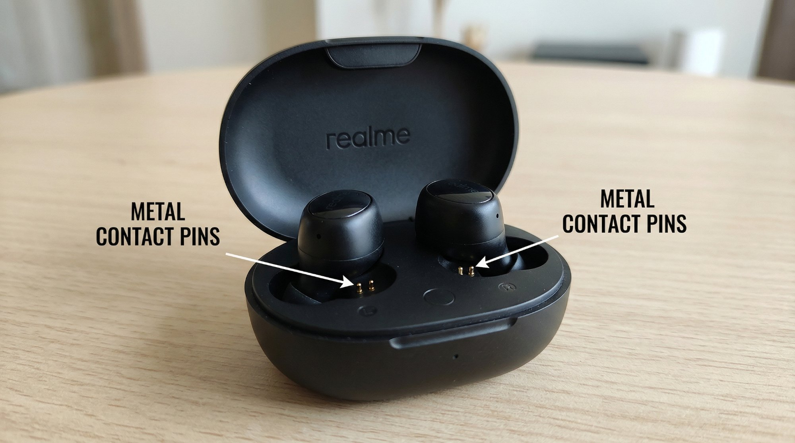
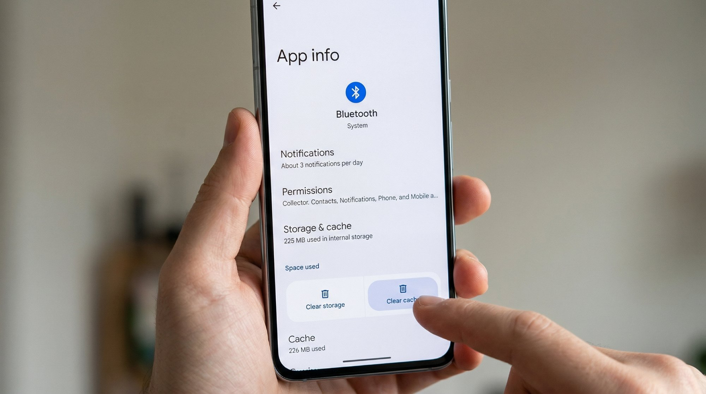

What Is the Realme Buds Not Connecting Problem?
Your Realme Buds were working fine yesterday and now your phone acts like they don't exist. Before you stuff them back in the box and head to the service centre, try these steps — the fix is almost always simpler than you think.
Realme Buds use Bluetooth to pair with your phone, and that connection depends on a small amount of saved pairing data on both devices staying in sync. When they stop connecting, it usually means that saved pairing information has got corrupted or confused — either on the buds, on your phone, or both. It can also mean the buds are trying to connect to a different previously paired device instead of yours. The good news is — this is almost always fixable at home.

Why Does This Happen?
There are four main culprits behind Realme Buds refusing to connect:
- Corrupted Bluetooth pairing data. Every time your Realme Buds connect to a device, they store that device's information. If your phone updated its software, restarted unexpectedly during a call, or the buds ran out of battery mid-connection, that stored data can get out of sync. The buds think they're connected when they're not, and your phone can't figure out where they went.
- Buds connected to a different device. This catches a lot of people off guard. If you ever connected your buds to a laptop, a second phone, or a friend's device, the buds might be trying to auto-connect to that device instead of yours. Bluetooth on Realme Buds typically connects to the last paired device, so if that other device is nearby and has Bluetooth on, your buds will latch onto it first.
- Charging case contact issue. The buds charge through small metal pins inside the case, and in India's dusty conditions — especially during dry summer months when fine particles are everywhere — those contacts can get coated and stop charging the buds properly. Buds that look charged but are actually at 0% won't connect to anything. Sweat during workouts can also leave residue on the pins over time.
- Phone Bluetooth cache overload. Android phones, particularly those running older versions of Realme UI or ColorOS, can accumulate Bluetooth cache data that eventually causes connection failures across all Bluetooth devices. Your buds aren't broken — your phone's Bluetooth system just needs a clean-out. This is an easy fix but one that most people have never heard of.
How to Fix Realme Buds Not Connecting to Phone — Step by Step
Start at Step 1 and move down only if the problem persists. Most people are done by Step 2.
This sounds too simple, but it works. Place both buds fully into the charging case, close the lid, count to 30, then open the lid and take them out. The buds will power cycle and enter pairing mode automatically.
- Put both buds fully into the charging case and close the lid.
- Wait 30 seconds — don't rush this step.
- Open the lid and take the buds out.
- On your phone, go to Bluetooth settings and tap on your Realme Buds in the available devices list.
- You should hear a connection tone in the buds when it works.
If the connection holds and audio comes through clearly on both sides, you're done — no need to continue.
Go to your phone's Bluetooth settings, find your Realme Buds in the paired devices list, and tap "Forget" or "Unpair." Now reset the buds and pair from scratch.
- Open Settings → Bluetooth on your phone.
- Find your Realme Buds in the paired devices list and tap the gear icon.
- Tap "Forget" or "Unpair" to remove them completely.
- With the buds outside the case, press and hold the touch area or button on both buds for about 5–8 seconds until the LED flashes.
- Place them back in the case, then take them out again to trigger pairing mode.
- Go to Bluetooth on your phone, find the buds in the scan list, and pair them like new.
If the connection holds after this step and audio comes through clearly on both sides, you're done — no need to continue.

If the buds aren't getting a proper charge, they'll appear to have battery but won't actually have enough power to maintain a Bluetooth connection.
- Take a dry cotton bud or a soft toothbrush.
- Gently clean the small metal pins inside the charging case wells.
- Also clean the metal contacts on the base of each earbud.
- Put the buds back in the case for 10 minutes to make sure they're actually charging.
- Try connecting again.
A bud that looked charged but had dirty contacts will often surprise you once the pins are clean.

This is the step most people skip entirely because they don't know it exists — but it fixes persistent connection failures that nothing else touches.
- Go to Settings → Apps (or App Management).
- Tap the three-dot menu and select "Show system apps."
- Find "Bluetooth" in the list and tap it.
- Tap Storage → tap "Clear Cache."
- Don't tap "Clear Data" — just the cache.
- Restart your phone, then try connecting your buds again.

Realme Buds auto-connect to the last paired device. If another device is nearby with Bluetooth on, your buds will latch onto it first.
- Turn off Bluetooth on every other device that has ever been paired to your Realme Buds — laptops, tablets, a second phone.
- Take your buds out of the case and see if they connect to your phone automatically.
- If they do, another device was grabbing the connection before your phone could.
- You can manage this going forward by turning off auto-connect on those other devices.
This wipes all pairing history from the buds completely. Use this if nothing above has worked.
- Take the buds out of the case.
- Press and hold the button or touch sensor on both buds simultaneously for 10–15 seconds.
- Wait until the LED flashes red and white alternately — this confirms the reset.
- Place them back in the case, wait 10 seconds, then take them out.
- Make sure your phone's Bluetooth is actively scanning.
- Find the buds in the scan list and pair from scratch.
Make sure your phone's Bluetooth is actively scanning when you do this — the buds don't stay in pairing mode for long.
When You Should Call a Service Engineer
If you've reset the buds twice, cleared your phone's Bluetooth cache, and they still won't connect or only one bud connects at a time, the Bluetooth chip or antenna in one of the buds has likely failed. This isn't something you can fix at home.
- Bluetooth chip or antenna failure. Realme authorised service centres can diagnose this — if it's a hardware fault and the buds are within warranty, you may get a replacement unit.
- Out of warranty repair costs. A repair or replacement of individual buds typically costs ₹500–1,200 depending on the model. At that price point it's honestly often better value to buy a new pair.
- Only one bud connects. If one bud works fine but the other never shows up after a factory reset, the hardware in the dead bud has failed. Service centre is the right call here.
- Physical damage. Drops on hard floors or water exposure beyond the buds' rated IPX spec can damage internal components in ways no software fix can address.
To reach Realme's service support in India: visit realme.com/in/support or call 1800-102-2777 (toll-free). Have your model number ready — it's printed inside the charging case lid.
Quick Summary
| Fix | Difficulty | Time Needed |
|---|---|---|
| Case reset — put back in, wait 30s, take out | Very Easy | 1 minute |
| Forget on phone & reset buds, re-pair fresh | Easy | 5 minutes |
| Clean charging contact pins | Very Easy | 5 minutes |
| Clear Bluetooth cache on phone | Easy | 3 minutes |
| Disable Bluetooth on competing devices | Very Easy | 2 minutes |
| Full factory reset of buds | Moderate | 5 minutes |
Start at the top — the case reset and forget & re-pair combo fixes this for the vast majority of users before they even reach step three. Realme Buds connection issues look complicated but they almost always come down to a pairing conflict or a cache problem — both of which take under five minutes to sort once you know what to do.
Fixed your Realme Buds? The Bluetooth cache clear (Step 4) is the one that surprises people the most — keep it in your back pocket because it works on any Bluetooth device that starts acting up on Android.